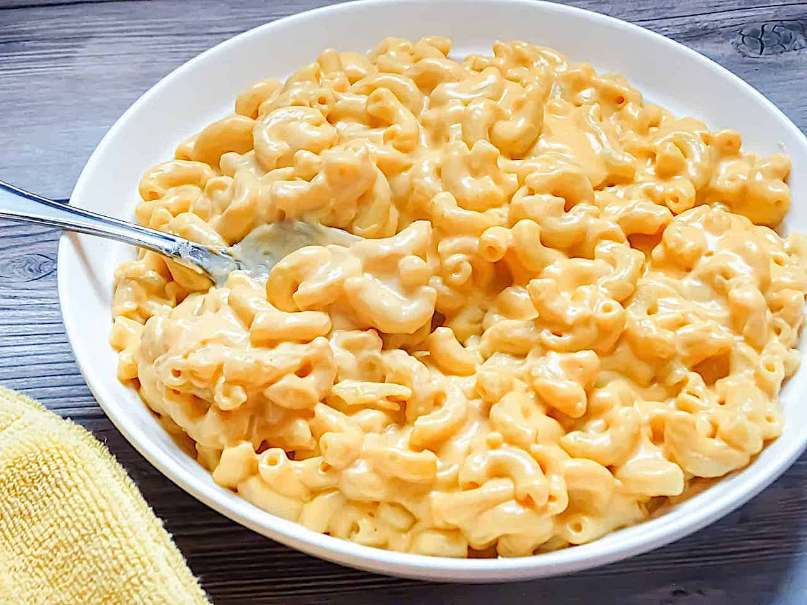

Slow-cooked Gourmet Mac & Cheese

Description
"Indulge in velvety slow-cooked mac and cheese—a comforting blend of
creamy cheeses and tender pasta perfection."
Ingredients
"Combine cooked pasta, rich cheeses, and a luscious sauce. Slow cook to
meld flavors into a creamy, irresistible mac and cheese."
Ingredients List
- 1 package (16 ounces) elbow macaroni
- 1/4 cup butter, melted
- 1 can (12 ounces) evaporated milk
- 1 1/2 cups milk
- 1 teaspoon salt
- 3 cups shredded sharp Cheddar cheese
- 1 1/2 cups shredded Colby cheese
- 1 1/2 cups shredded Monterey Jack cheese
- 1/2 cup grated Parmesan cheese
Directions
- Preheat the oven to 350°F (175°C).
-
Cook the elbow macaroni according to the package instructions; drain and
set aside.
-
In a large bowl, combine the melted butter, evaporated milk, regular
milk, and salt.
-
Add the cooked macaroni to the milk mixture and stir to coat evenly.
-
Layer the shredded Cheddar, Colby, Monterey Jack, and Parmesan cheeses
in the slow cooker.
-
Alternate between layers of cheese and macaroni mixture until all
ingredients are used.
-
Cover the slow cooker and cook on low heat for 3 to 4 hours, or until
the cheeses are melted and the mixture is creamy.
- Serve the creamy slow-cooked mac and cheese warm and enjoy!